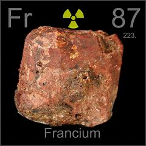

Francium is an inorganic product made from the decay process of Actinium. Actinium is a type of radioactive medicine. This is a chemical on the periodic table of elements. It's symbol is Fr and it's atomic number is 87. One facture that makes this a very hard poison to use is it completly decays in only 22 minutes limiting its use. Francium can damage your cells and potentially cause cancer. Francium can be found within uranium minerals like autine, monazite, and uraninite. It is very hard to use Francium to kill someone because you would need a lot of it and it is hard to acquire a large amount of francium. Though it does cause lots of harm due to radiation. It is very expanisve to make so expenisve that producing 100 grams of francium would cost billions of dollars.